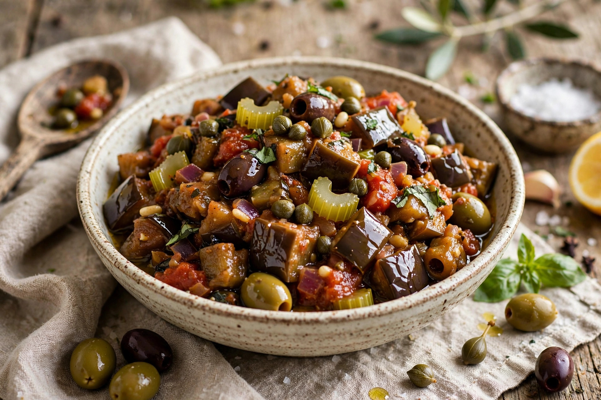

From Wikipedia, the free encyclopedia
| Caponata | |
|---|---|
 | |
| Type | Salad / relish |
| Place of origin | Sicily, Italy |
| Main ingredients | Aubergine, celery, tomato, olives, capers, vinegar, sugar |
Caponata is a Sicilian dish consisting of chopped fried aubergine (eggplant) and other vegetables, seasoned with olive oil, tomato sauce, celery, olives, and capers, in an agrodolce (sweet and sour) sauce. It is served at room temperature as an antipasto, side dish, or spread on bread. Numerous local variations exist across Sicily, some including octopus, pine nuts, or raisins.
The dish likely developed from the layered influences of Arab, Spanish, and French rule in Sicily. Sweet-and-sour vegetable dishes spread through the Mediterranean under Arab influence, and caponata's use of aubergine and vinegar reflects that heritage. The name's origin is debated; one theory links it to the Catalan word caponada, a similar relish.
Aubergine is diced, salted, and fried in olive oil. A sauce of tomato, blanched celery, onion, olives, capers, vinegar, and a little sugar is prepared separately, then combined with the aubergine and left to rest so the flavours blend. Caponata keeps well and is often considered better the next day.